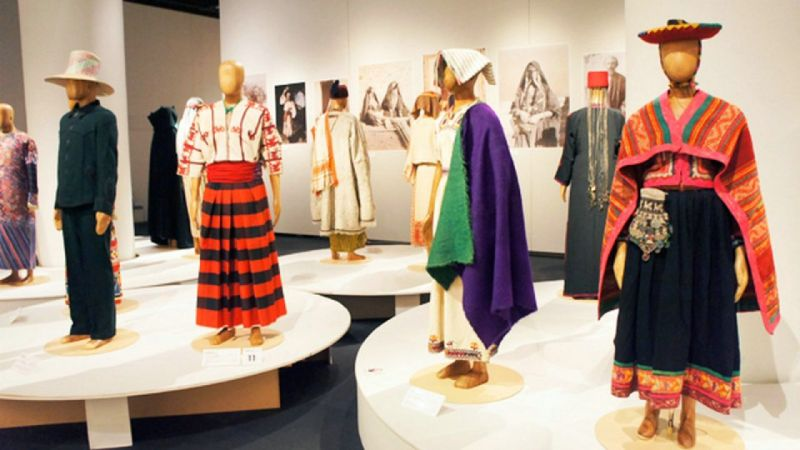
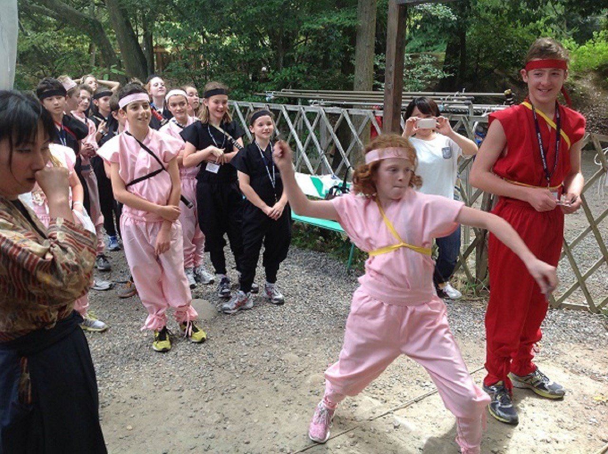
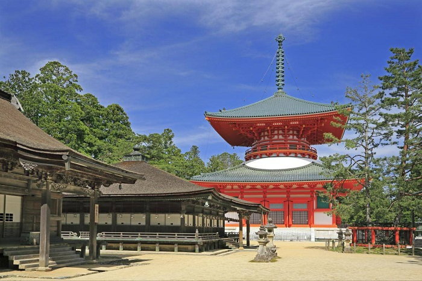

Tour Ninja Thời Edo
Chủ đề: Quá khứ · Phong cách: Khám phá / Phiêu lưu · Loại tour: 1 chiều
Đặt chỗ Xem Tour 2Giới thiệu
Khám phá văn hóa ninja truyền thống, trải nghiệm kỹ năng chiến binh xưa và thưởng thức không khí phố cổ Nhật Bản thời Edo.
Nội dung Tour
Ngày 1 (15/12): Khởi hành từ Tokyo, tham quan phố cổ Edo, thưởng thức món ăn truyền thống Nhật Bản.
Ngày 2 (16/12): Tham quan làng Ninja ở Iga – học kỹ năng ninja truyền thống.
Ngày 3 (17/12): Thử trang phục, chụp ảnh, tham gia trò chơi kỹ năng ninja.
Ngày 4 (18/12): Dạo quanh núi Kōya – thiền & rèn luyện tinh thần chiến binh.
Điểm nổi bật
- Trải nghiệm kỹ năng ninja truyền thống
- Chụp ảnh với trang phục & đạo cụ cổ xưa
- Thiền trên núi Kōya
Thông tin cần lưu ý
- Tour không hỗ trợ quay lại hiện tại
- Mang giày thoải mái để tham gia hoạt động
Lịch trình theo ngày


